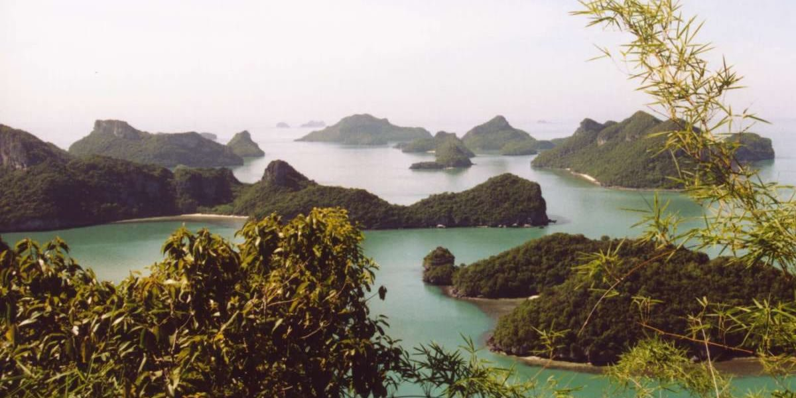
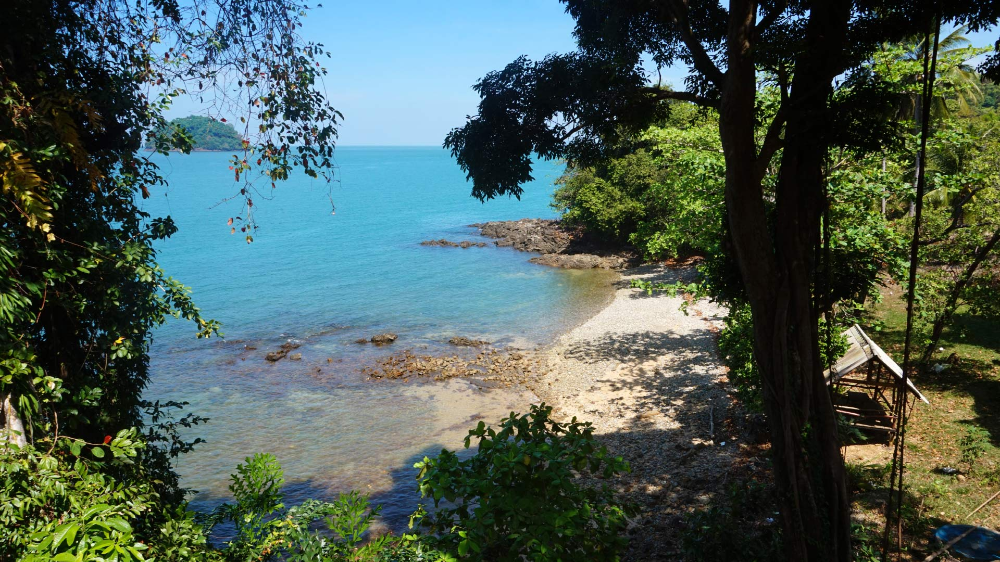

Willkommen auf Koh Chang!
|  |  |
|---|
Über Koh Chang
Ko Chang (andere Schreibweise: Koh Chang, Thai: เกาะช้าง, Aussprache: [kɔ̀ʔ tɕʰáːŋ]) ist eine Insel in der Provinz (Changwat) Trat in der Ostregion von Zentral-Thailand. Ko Chang ist auch eine Kleinstadt im Landkreis (Amphoe) Ko Chang der Provinz Trat. Die Entfernung zur Hauptstadt Bangkok beträgt etwa 315 km. Ko Chang heißt wörtlich übersetzt „Elefanteninsel“, was auf die natürliche Form der Insel zurückzuführen ist.
Willst du mehr sehen? Klick hier: Koh Chang Travel